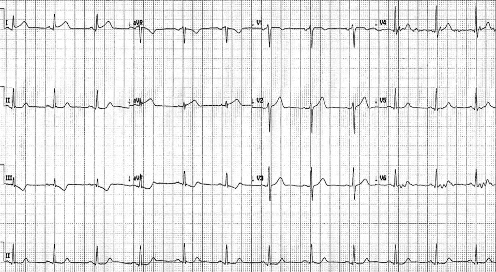
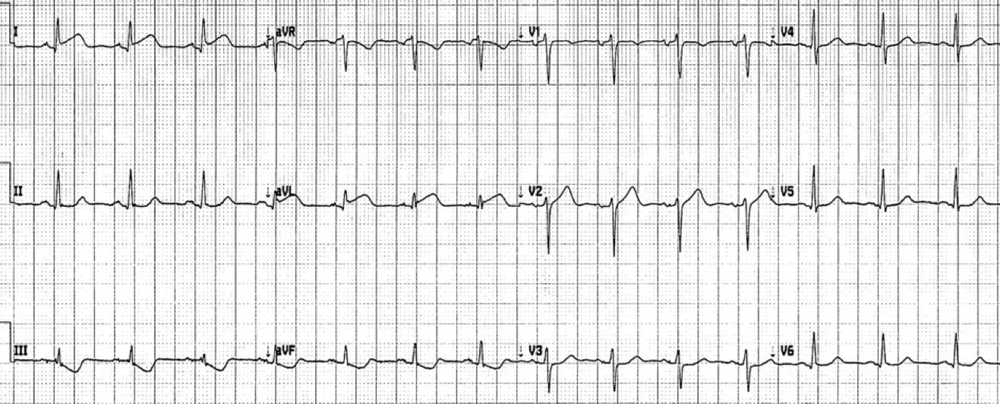
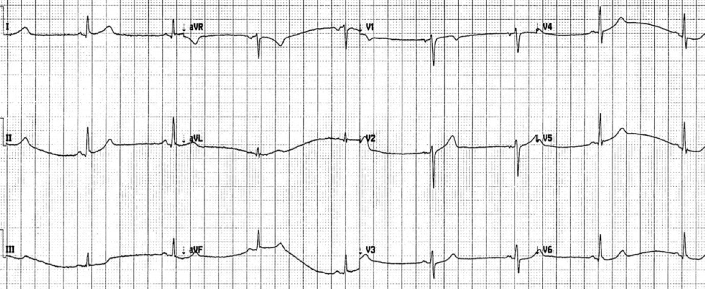
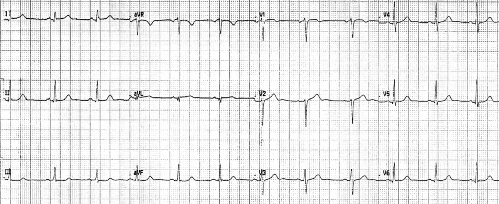
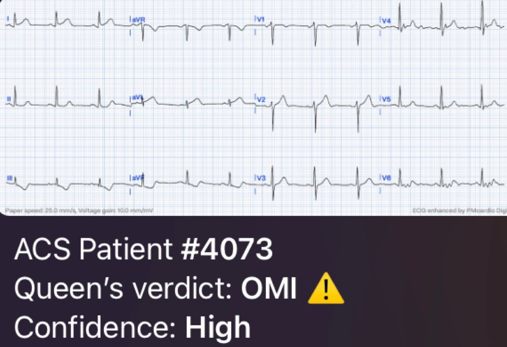
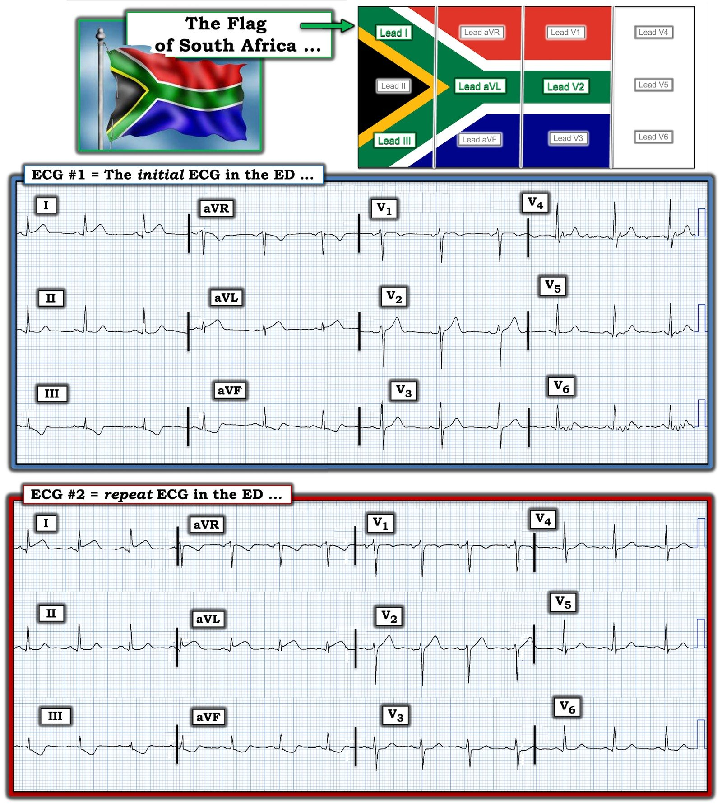

08/09/2023 — Bệnh nhân 50 tuổi ở một cộng đồng nông thôn hẻo lánh, đau ngực và điện tâm đồ “bình thường”
Bản dịch tiếng Việt của bài "50 year-old in remote rural community with chest pain and ‘normal’ ECG" – Dr. Smith’s ECG Blog. Giữ nguyên toàn bộ 7 hình ảnh của bản gốc.
Do một người giấu tên gửi, Jesse McLaren biên tập
Ngôi thứ nhất “tôi” trong bài là người gửi giấu tên này.
Một bệnh nhân 50 tuổi đến khoa cấp cứu của một
cộng đồng nông thôn hẻo lánh (nơi phòng thông tim gần nhất phải đi máy bay mới tới) vì
đau ngực nhẹ một giờ, lan ra sau lưng và hàm, kèm một điện tâm đồ được
kết quả đọc bằng máy tính ghi là ‘bình thường’. Bạn nghĩ gì, và bạn sẽ
xử trí bệnh nhân này thế nào?


(Thuật toán Mortara ghi là ‘bình thường’)
Nhịp xoang bình thường, dẫn truyền bình thường, trục bình thường,
tăng tiến sóng R bình thường và điện thế bình thường. Có sóng T đảo ngược rõ
ở III/aVF, là thay đổi soi gương (reciprocal) của ST chênh lên kín đáo và sóng T tối cấp
ở I/aVL (đáy rộng, cân đối, và lớn hơn toàn bộ phức bộ QRS ở aVL). Đây là
hình ảnh chẩn đoán nhồi máu cơ tim do tắc (OMI) thành bên cao, do động mạch mũ hoặc
nhánh chéo thứ nhất.
Nhưng điện tâm đồ đầu tiên được máy tính ghi là bình thường, và
troponin độ nhạy cao đầu tiên, chỉ sau một giờ có triệu chứng, là 5 ng/L, cũng
bình thường (<12 ng/L). Cả hai điều này đều không hiếm gặp trong OMI, nhưng cả hai
đều có thể dẫn đến chậm trễ chẩn đoán và điều trị.
Điện tâm đồ đã được một đồng nghiệp ký duyệt và bệnh nhân được bàn giao
cho tôi để theo dõi troponin liên tiếp. Là một độc giả nhiệt thành của Dr. Smith’s ECG
Blog, tôi lập tức nhận ra điện tâm đồ đầu tiên đã đủ chẩn đoán OMI, liền gọi
phòng thông tim và nhắn tin gửi ảnh chụp điện tâm đồ cho bác sĩ tim mạch can thiệp.
Nhưng họ không nhận ra OMI thành bên cao, và khuyên không tái tưới máu vì không đạt tiêu chuẩn STEMI. Họ ghi nhận “điểm J
chênh lên ở các chuyển đạo trước tim phía trước, với đoạn ST chênh lên nhẹ
dạng lõm (concave-up), nhất là ở V2 và V3. Cũng có đoạn ST dẹt
ở các chuyển đạo chi phía dưới. Rõ ràng là [bệnh nhân] đang
bị một biến cố mạch vành cấp, tuy nhiên không có tiêu chuẩn điện tâm đồ rõ ràng
để tiêu sợi huyết hay nong mạch vành tiên phát.
Tôi đã yêu cầu lấy thêm một mẫu troponin và ghi điện tâm đồ thường xuyên.” Dù không có tiêu chuẩn STEMI, điện tâm đồ vẫn cho thấy OMI cần tái tưới máu.
Troponin lặp lại tăng nhẹ từ 5 lên 16, và điện tâm đồ
ghi lại ở dưới đây:


Tương tự, chỉ khác là đoạn ST ở I/aVL thẳng đuỗn hơn,
và có ST chênh xuống ở V3. Càng chẩn đoán OMI rõ hơn, không phải của LAD mà của một
mạch máu thành bên cao.
Vì không có STEMI rõ ràng và troponin thấp, bác sĩ
tim mạch can thiệp khuyên tôi điều trị bệnh nhân như NSTEMI thay vì
dùng thuốc tiêu sợi huyết, lặp lại troponin vào buổi sáng rồi gọi lại cho họ, sớm hơn
nếu có gì thay đổi.
Họ nói rằng vì troponin chỉ tăng từ 5 lên 16 trong một
giờ, và ST chênh lên chưa xuất hiện trên điện tâm đồ, nên đây không phải STEMI và có thể dùng
enoxaparin rồi lặp lại troponin/điện tâm đồ vào buổi sáng. Không cần TNK hay chuyển viện
khẩn. Với một điện tâm đồ “bình thường” và một đồng nghiệp thâm niên đã ký duyệt nó, tôi
không đủ tự tin cho TNK khi không có khuyến cáo của bác sĩ tim mạch, và anh ấy
bảo là không.
Cơn đau hết. Ba giờ sau bệnh nhân có một đợt
nhịp chậm, nhưng vẫn không đau, và điện tâm đồ được ghi lại:


Các thay đổi ST/T đã hết, gợi ý tái tưới máu
Đến sáng bệnh nhân vẫn không đau. Troponin lặp lại
tăng lên 1785 và điện tâm đồ được ghi lại:


Điện tâm đồ gần như bình thường, vậy động mạch vẫn đang thông nhưng có nguy cơ
tắc lại.
Bệnh nhân đã được chuẩn bị chuyển viện nhưng do thời tiết xấu
chuyến bay bị hoãn thêm. Troponin tăng lên 8495. Ba ngày sau
đợt đau ngực, chụp mạch vành thấy hẹp 80% LAD đoạn giữa với dòng chảy TIMI 3,
và một nhánh chéo thứ nhất đường kính 2mm hẹp 95%, không ghi dòng chảy TIMI.
Động mạch mũ bình thường. Siêu âm tim cho thấy chức năng thất trái bình thường. Không có các điện tâm đồ theo dõi
sau đó, nhưng nhiều khả năng sẽ cho thấy sóng T đảo ngược tái tưới máu ở các chuyển đạo bên cao.
Bác sĩ tim mạch can thiệp quy nhồi máu cho
LAD đoạn giữa chứ không phải nhánh chéo thứ nhất, viết rằng “[bệnh nhân] đã tái thông nhưng
nhiều khả năng LAD đã tắc hoàn toàn trước điện tâm đồ đầu tiên… Nếu LAD
tắc hoàn toàn ở đoạn giữa vào thời điểm ghi điện tâm đồ đầu tiên
thì tôi sẽ chờ đợi ST chênh lên từ 3 đến 4mm hoặc hơn trên toàn bộ
các chuyển đạo trước tim. ST chênh lên kín đáo ở thành trước chỉ gợi ý một
tắc nghẽn thoáng qua.”
Nhưng điện tâm đồ đầu tiên không cho thấy tái tưới máu của LAD
đoạn giữa, mà cho thấy tắc nhánh chéo thứ nhất.
Bệnh nhân đã rất may mắn khi không mất thêm
cơ tim. Thứ nhất, bệnh nhân có thể đã bị cho về nhà sau hai điện tâm đồ ‘bình thường’
và một troponin bình thường-tăng tối thiểu, nhưng may mắn có một bác sĩ
đã chủ động tìm và nhận ra OMI và không bị lung lay bởi kết quả đọc
tự động, hay nồng độ troponin sớm, hay việc một đồng nghiệp thâm niên ký duyệt
rằng chúng bình thường. Thứ hai, bệnh nhân đã tái tưới máu tự phát và may mắn
không bị tắc lại trong thời gian trì hoãn kéo dài trước khi thông tim. Nhưng việc cứu vớt cơ tim
không nên phụ thuộc vào vận may.
Nếu bệnh nhân không tái tưới máu tự phát thì họ có thể
đã bị ngừng tim mà chưa hề được điều trị tái tưới máu, dù
điện tâm đồ đầu tiên đã đủ chẩn đoán một động mạch bị tắc. Mặt khác, nếu
bác sĩ can thiệp được thuyết phục là có OMI, bệnh nhân đã có thể được dùng
thuốc tiêu sợi huyết và chuyển viện sớm ngay sau điện tâm đồ đầu tiên, không cần chờ
troponin tăng, và đã có thể giảm kích thước vùng nhồi máu.
Đây là kết quả đọc của Queen of Hearts cho điện tâm đồ đầu tiên:


Tôi nghĩ lợi ích thực sự của việc chuyển sang
OMI – và AI – là nhận diện những bệnh nhân sẽ được lợi từ can thiệp
sớm. Điều này có ý nghĩa rất lớn đối với các cộng đồng nông thôn và hẻo lánh,
nơi phải đưa ra những quyết định lớn về nguồn lực như đặt chuyến bay khẩn, và những quyết định
nguy cơ cao như cho thuốc tiêu sợi huyết. Các ca STEMI của chúng tôi sẽ được chuyển bằng máy bay ngay
khi có máy bay (thường 3-4h, có thể đến 8h), trong khi
các ca NSTEMI có thể chờ nhiều ngày, như bệnh nhân này.
Bình luận của McLaren: Ca này minh họa cả những lỗ hổng chất lượng dưới mô hình STEMI, lẫn những cơ hội
cải thiện nhờ chuyển đổi sang mô hình OMI:
1.
Tiêu chuẩn STEMI thường xuyên bỏ sót OMI
2.
Kết quả đọc bằng máy tính không chỉ bỏ sót OMI mà còn có thể
ghi chúng là ‘bình thường’
3.
(Các) troponin ban đầu sau khi có triệu chứng cấp
gây yên tâm giả tạo
4.
>25% ca ‘NSTEMI’ có động mạch tắc
hoàn toàn và tử vong cao hơn
5.
Từng cá nhân có thể học được OMI, và AI dựa
trên OMI có thể đưa các tiến bộ đến với mọi nơi. Trong bối cảnh các cộng đồng nông thôn
hẻo lánh, điều này có thể giúp bác sĩ cấp cứu bảo vệ quyền lợi cho bệnh nhân của mình,
và rút ngắn chậm trễ tái tưới máu tới nhiều ngày đối với OMI STEMI âm tính (STEMI(-)OMI)

===================================
BÌNH LUẬN CỦA TÔI, bởi KEN GRAUER, MD (8/9/2023):
===================================
Ca hôm nay đặc biệt ở chỗ nó xảy ra tại một cộng đồng nông thôn hẻo lánh (nơi phòng thông tim gần nhất phải đi máy bay mới tới). Dù các ưu tiên lâm sàng vẫn như cũ (tức là, Có OMI cần tái tưới máu kịp thời hay không?) — vị trí hẻo lánh đặt ra thêm thách thức là phải quyết định có cần vận chuyển bằng máy bay ngay lập tức hay không, với tất cả những hệ quả lâm sàng kéo theo. Cụ thể, trong ca hôm nay — các vấn đề cần giải quyết gồm:
- Đến thời điểm nào trong ca hôm nay thì có thể tự tin chẩn đoán OMI (nhồi máu cơ tim do tắc — Occlusion-based MI) cấp (ít nhất là chẩn đoán OMI cho đến khi chứng minh được điều ngược lại)?
- Một khi chẩn đoán OMI cấp đã được đặt ra trong ca hôm nay — Liệu điều này có đáng để vận chuyển ngay lập tức bằng máy bay đến một cơ sở có khả năng thông tim 24/7 không? Nếu có — TẠI SAO?
- Những Bài học cần rút ra từ ca hôm nay là gì?
Để rõ ràng và dễ so sánh — tôi đã đặt 2 bản ghi đầu tiên của ca hôm nay cạnh nhau trong Hình 1.
- Trong khi bạn suy ngẫm về các vấn đề cần giải quyết nêu trên — hãy NHÌN lại 2 điện tâm đồ đầu tiên này của ca hôm nay. Hãy ghi nhớ Bệnh sử (tức là, một bệnh nhân 50 tuổi đến khoa cấp cứu nông thôn với đau ngực 1 giờ lan ra sau lưng và hàm — và điện tâm đồ ban đầu được kết quả đọc bằng máy tính ghi là “bình thường”).


Đến thời điểm nào thì có thể chẩn đoán OMI cấp?
Bệnh nhân trong ca hôm nay đến khám vì đau ngực mới xuất hiện. Phải ghi nhận công của người gửi giấu tên ca này — anh/chị ấy đã ngay lập tức nhận ra rằng ở bệnh nhân đau ngực mới xuất hiện này — điện tâm đồ #1 đã đủ chẩn đoán OMI. Người gửi giấu tên đã xử trí đúng khi đẩy nhanh việc đánh giá bằng cách gọi phòng thông tim và nhắn tin gửi ảnh điện tâm đồ ban đầu này cho bác sĩ tim mạch can thiệp. Xin nhấn mạnh các điểm MẤU CHỐT đã được mô tả ở trên trong phần bàn luận xuất sắc của Dr. McLaren:
- Sóng ST-T ở chuyển đạo aVL của điện tâm đồ #1 là tối cấp. Có lẽ lý do bác sĩ tim mạch hội chẩn không nhận ra bất thường sóng ST-T ở chuyển đạo này — là vì sóng T ở aVL không lớn. Nhưng chúng ta không thể chờ đợi sóng T này “lớn” — vì biên độ QRS nói chung ở aVL quá nhỏ. Điều quan trọng không phải là sóng T ở aVL “cao bao nhiêu”, mà là sóng ST-T không tương xứng đến mức nào (tức là, sóng T ở aVL cao gần gấp đôi sóng r nhỏ xíu ở chuyển đạo này — đi kèm đáy sóng T rộng ra rất nhiều một cách không tương xứng ở chuyển đạo aVL).
- ST chênh lên ở chuyển đạo bên cao còn lại ( = chuyển đạo I) cũng bất thường. Trong bối cảnh hình dạng sóng ST-T bất thường ở aVL — đoạn ST dốc lên nhưng chênh lên rõ ràng ở chuyển đạo I không nên được hiểu là một biến thể tái cực.
- Mọi nghi ngờ về khả năng “cấp tính” của các dấu hiệu sóng ST-T ở các chuyển đạo bên cao I và aVL — sẽ lập tức bị xóa bỏ khi thấy đoạn ST thẳng đuỗn và ST chênh xuống ngược chiều như ảnh trong gương (soi gương) ở các chuyển đạo III và aVF. Một lần nữa, chính tính không tương xứng của thay đổi sóng ST-T cho chúng ta biết rằng chênh xuống “quá đầy đặn” (hypervoluminous) (nhất là ở chuyển đạo III) — không thể là bình thường, xét đến kích thước nhỏ xíu của sóng R ở chuyển đạo này.
- Bài học: Chiều cao sóng T kém quan trọng hơn nhiều so với hình dạng và tính tương xứng của sóng ST-T, so với biên độ QRS ở chuyển đạo đang xem. Ở bệnh nhân đau ngực mới xuất hiện — các thay đổi sóng ST-T mô tả ở trên, với tính không tương xứng rõ rệt ở các chuyển đạo I, III, aVL và aVF của điện tâm đồ #1 — phải được nhận ra là các thay đổi tối cấp có giá trị chẩn đoán OMI cấp cho đến khi chứng minh được điều ngược lại.
- Có cần vận chuyển ngay lập tức? Như Dr. McLaren đã nêu — bệnh nhân hôm nay may mắn ở chỗ tình trạng tắc mạch vành cấp đã tái tưới máu tự phát — và bệnh nhân vẫn không đau. Như chúng tôi đã nhiều lần nhấn mạnh trên Dr. Smith’s ECG Blog — vấn đề là động mạch “thủ phạm” có thể tự tắc lại vào bất kỳ thời điểm nào, với hậu quả có thể gây tử vong. Vì vậy — xử trí tối ưu lẽ ra phải là bác sĩ tim mạch can thiệp nhận ra OMI dựa trên bệnh sử đau ngực mới xuất hiện đi kèm các thay đổi trên điện tâm đồ ban đầu như đã mô tả ở trên. Lẽ ra phải sắp xếp chuyển kịp thời đến một trung tâm có khả năng thông tim ngay sau khi ghi điện tâm đồ ban đầu.
Các dấu hiệu điện tâm đồ bổ sung trong ca hôm nay:
Như Dr. McLaren đã nêu — điện tâm đồ #1 đủ chẩn đoán OMI thành bên cao, thường cho thấy tắc cấp hoặc của LCx, hoặc của Nhánh chéo thứ 1 hay thứ 2 của LAD. Các dấu hiệu kín đáo ở chuyển đạo ngực trên điện tâm đồ ban đầu hôm nay gợi ý mạch máu nào trong số này nhiều khả năng là động mạch “thủ phạm”.
- Hình dạng sóng ST-T trên điện tâm đồ #1 gợi đến khả năng hình ảnh Cờ Nam Phi (South African Flag) — trong đó có ST chênh lên (hoặc sóng T tối cấp) ở các chuyển đạo chi bên I và aVL — ST-T chênh xuống soi gương ở chuyển đạo III — và ST chênh lên ở chuyển đạo V2, nhưng không ở bất kỳ chuyển đạo ngực nào khác (Lưu ý 4 chuyển đạo này đi theo phần màu XANH LÁ của lá cờ Nam Phi trong hình minh họa đặt phía trên điện tâm đồ #1 ở Hình 1 như thế nào).
- Như chúng tôi đã trình bày trong một số bài trên Dr. Smith’s ECG Blog (Xin xem Bình luận của tôi ở cuối trang trong bài ngày 4 tháng Tư năm 2022 và trong bài ngày 12 tháng Một năm 2023) — hình ảnh Cờ Nam Phi gợi ý có thể có OMI cấp của Nhánh chéo thứ 1 hoặc thứ 2 của LAD.
- Quay lại các chuyển đạo ngực trên điện tâm đồ ban đầu ở Hình 1 — có ST chênh lên nhẹ ở V2 — nhưng không có ở V3. Dù nhiễu đường nền khiến việc đánh giá sóng ST-T ở V4 và V6 khó khăn — dường như không có ST chênh lên ở các chuyển đạo ngực bên V4,V5,V6.
Điện tâm đồ #2 — ghi một thời gian sau điện tâm đồ #1 — giúp làm rõ bức tranh.
- Các dấu hiệu ở chuyển đạo chi trên điện tâm đồ #2 trông tối cấp hơn so với điện tâm đồ #1 — do đoạn ST thẳng đuỗn hơn một cách kín đáo-nhưng-có-thật ở I, III và aVL.
- Các dấu hiệu ở chuyển đạo ngực trên điện tâm đồ #2 rõ hơn so với điện tâm đồ #1 — giờ đây đoạn ST ở V2 thẳng đuỗn chắc chắn — cùng với ST dẹt và chênh xuống giờ đã thấy rõ ở V3.
- NHẬN ĐỊNH: Tôi cho rằng các dấu hiệu sóng ST-T trên điện tâm đồ #2 giờ đây rất gợi ý dấu hiệu Cờ Nam Phi (South African Flag Sign) — với ST chênh lên tối cấp ở I và aVL — ST chênh xuống soi gương ở III (cả ở aVF) — và đoạn khởi đầu ST thẳng đuỗn rõ ở V2, trông khác hẳn so với việc không có ST chênh lên ở bất kỳ chuyển đạo ngực nào khác (và ST dẹt, chênh xuống ở V3). Các dấu hiệu điện tâm đồ này phù hợp với kết quả thông tim cho thấy hẹp 95% nhánh chéo thứ 1, không ghi nhận dòng chảy TIMI.